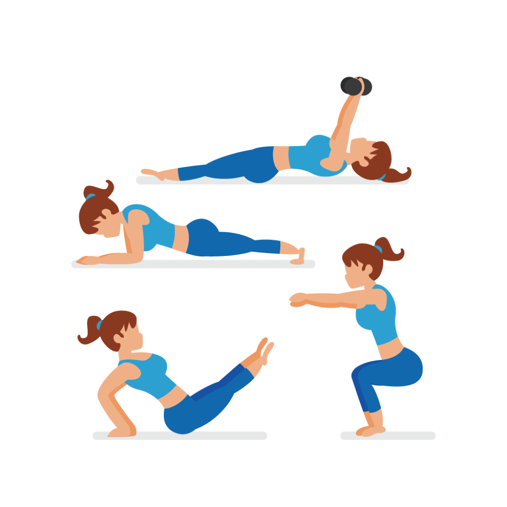

Mensajes Agente

Añadir Discapacidad

Añadir Rutina

Agregar Agente


La informacion medica ofrecida en esta web se ofrece solamente con caracter formativo y educativo y no pretende sustituir las opiniones, consejos y recomendaciones de un profesional sanitario. Las desciciones relativas a la salud deben ser tomadas por un profesional sanitario, considerando las caracteristicas unicas del paciente